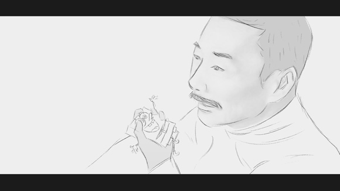
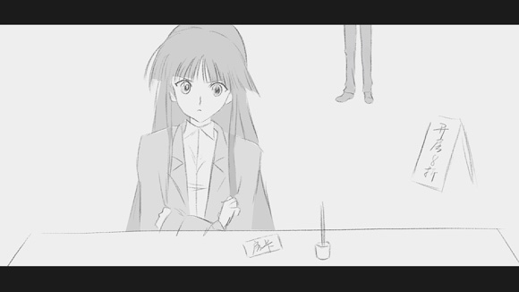
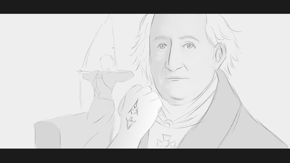
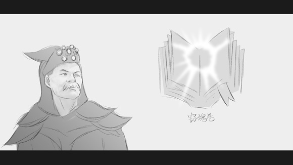
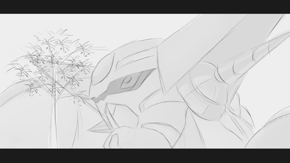
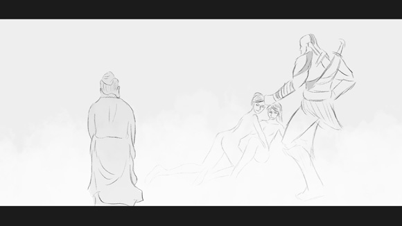
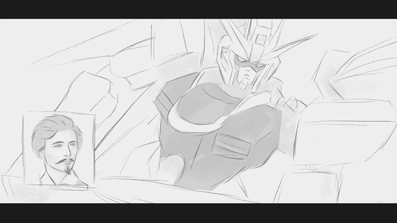
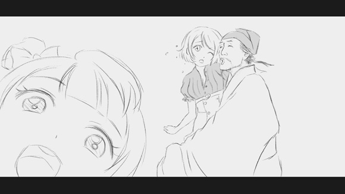
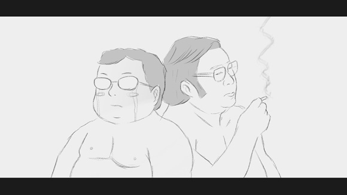

正文:
基于“先问是不是，再问为什么”的原则来判断，我可能遇到了假的知乎问题。因为按照文学领域的惯例，“用典不能算玩梗……用典！……读书人的事，能算玩梗么？”
当然不深究这一点的话，我倒曾答过一题，其中有部分段落，和高票答案的“我悄悄地披了大衫，带上门出去了”大抵算是一个系列的：
“时间就像
海绵里的水，只要愿挤，总还是有的。” —— 鲁迅

“
冬天来了，
春天还会远么？” —— 雪菜

“我要做我自己的
主人。” —— 歌德

“
书是人类进步的阶梯。” —— 高尔基

“庭有枇杷树，吾妻死之年所手植也，今已亭亭如
盖矣。” —— 归有光

“
三人行，必有我师焉。” —— 孔子

“生命诚可贵，爱情价更高，若为
自由故，两者皆可抛。” —— 裴多菲

“感时
花溅泪，恨别
鸟惊心。” —— 杜甫

“
路遥知
马力，日久见人心。” —— 《争报恩》

节选自之前的一篇答案：
有哪些动漫或者游戏里的台词在生活中被经常说起？ - windleavez 的回答 - 知乎